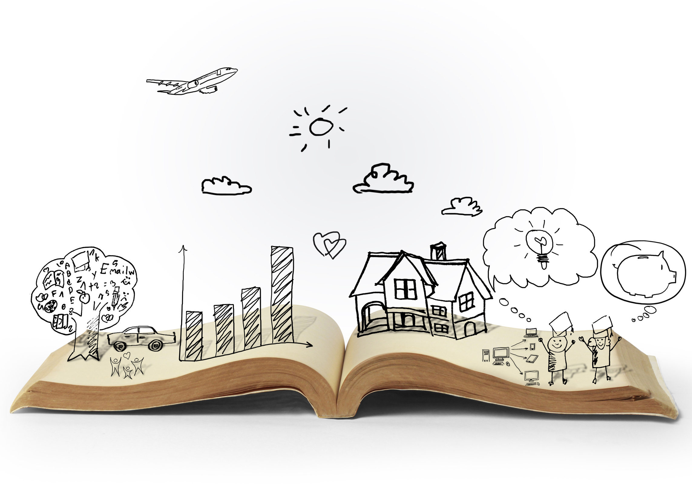

Matthew's Guide of Storytelling
Storytelling is an artform.
It's spellbinding, mesmuerizing, and a major entertainer in the world. Without
stories, there is trouble understanding the world, connecting with others, and giving meaning to our
experiences. They teach us lessons, morals, empathy, and how to become greater human beings. They
keep us occupied and enthralled throughout the experience, and without them, life would be a lot more
BORING.
I am a writer of stories.
As a writer, how am I supposed to write a story that is somehow interesting to someone else
when they read it?
Practice makes permanent. The more you write, the better you get at it. Same goes for reading, sports,
and practically anything you set your mind to. Reading more stories helps as well because it gives you a look at proffesional
writing, and it can give you ideas of your own to implement into your own stories. The best time to write or tell a story is
when you feel most inspired and most enthralled to do so. When an idea comes to your mind, that's a good time to start
writing or plotting down that idea. Whenever you want to, you should.

Wait, how the heck do I know that I'm a storyteller? What if I don't like to write, or read, or any of that stupid stuff?
Well, you'll likely know based on your thoughts or inspirations. If you like sports, and you only ever like watching
TV instead of reading, and you don't like reading, likely you're just an enjoyer of stories and not a maker of them.
The best way to know is to base it on your interests. If you like to read, write, and you like the thrill of sharing your
ideas to other people; most likely you are a storyteller. If you have sudden inspirations or ideas for a story, then
that is probably the biggest indication of your brain telling you that you have a craving for telling stories.
The way I look at it, life on its own is a story, and the only other way to make more of what you're making as you live
is to make more stories---and it doesn't have to be writing. Take a hike, smell the flowers, hang out with friends and
family, read your future kid a book.
Do anything to share, express, and live, and that will make your story bigger, better, and above all---beautiful.